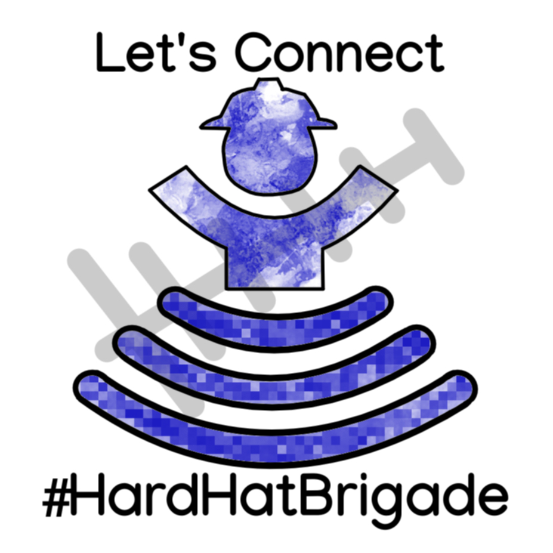

What is the Hard Hat Brigade Contest?
@HardHatBrigade is hosting a hard hat contest (unofficially) at DC27. We want to encourage others to have some fun with a cheap and easy-to-work-with platform and build some cool stuff.
When: sometime during DefCon 27
Where: somewhere onsite DefCon 27
(to be announced on Twitter)
Rules
- You must use a hard hat.*
- Type 1 Hard Hats: have a full brim around the entire hat.
- Type 2 Hard Hats: have a short brim only in the front.
- * Other hat types are allowed but will not be eligible for the GRAND PRIZE *
- * Other hat types are cowboy hardhats, fireman helmets, etc *
- * Pith helmets are INCLUDED in the contest for the GRAND PRIZE *
- There are a few categories of competition:`
- #BLING - hat with the best electronic bling
- #WAREZ - hat with the best hacker functionality
- #NOLIMITS - the best overall hardhat and GRAND PRIZE winner
- Categories can be added / changed / deleted at discretion of organizers
- Modifications cannot remove more than 40% of the base material.
- Hard hat cannot be a hazard to life, limb, or property.
- Contestants shall not interfere with other’s hard hat entries, physically, logically, or electronically. Just not at all mmmkay?
- Have fun and learn new skills!
Competition
- Contestants will have 2 minutes to describe their entry to the judges, and include any demonstration of capabilities. 2 minutes, Turkish, 2 minutes!
- There is no time limit for questions and answers by judges after initial presentation.
Judging
- Judging is at the discretion of organizers and anyone they choose to assist in judging.
- All judging decisions are final.
Some Useful Information
The best hats often use cheap materials - A Type 1 hardhat is $16.00 USD at HomeDespot for example.
Hard hats are designed for safety. As such, most of them are made from a material that paint does not adhere to (including some adhesives/epoxies), at least without some real effort.
The plastic in many hard hats is pretty soft, using a punch to dimple where you may be drilling is helpful to keep a drill lined up. And help avoid injury.
Hard hats can be HOT. Do some test runs wearing it before venturing into the Las Vegas heat.
LiPo batteries can catch on fire! Use at your own risk. (Do we need to say anything else about that?)
Consider power and weight concerns - we are looking for entries that can be worn ALL DAY.
The only limits are your imagination!
DISCLAIMER: THIS CONTEST IS NOT AFFILIATED WITH ANY OFFICIAL DEFCON ACTIVITY, EVENT, OR CONTEST. PARTICIPATION IS VOLUNTARY AND PARTICIPANTS ASSUME ALL LIABILITIES ASSOCIATED WITH THEIR CUSTOM CREATIONS. MODIFIED HARD HATS ARE NEVER TO BE USED IN ANY SAFETY CAPACITY.